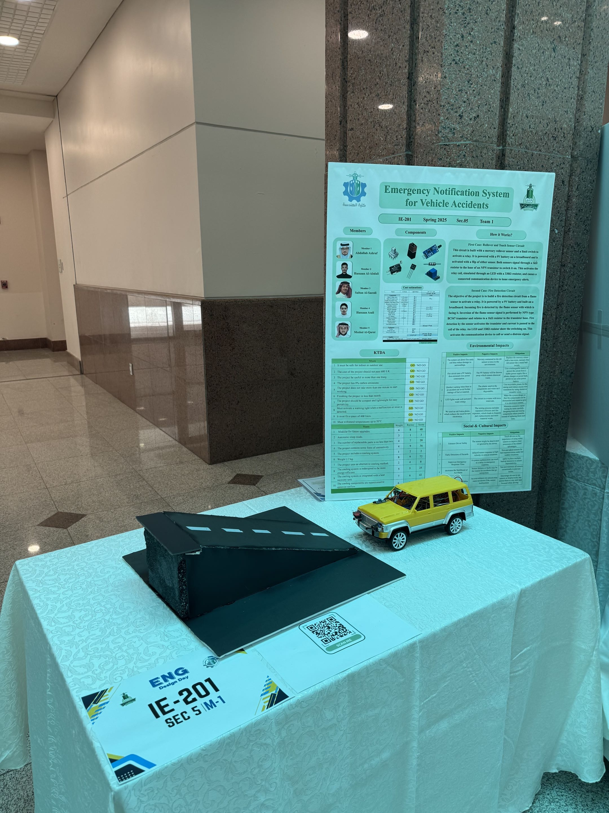
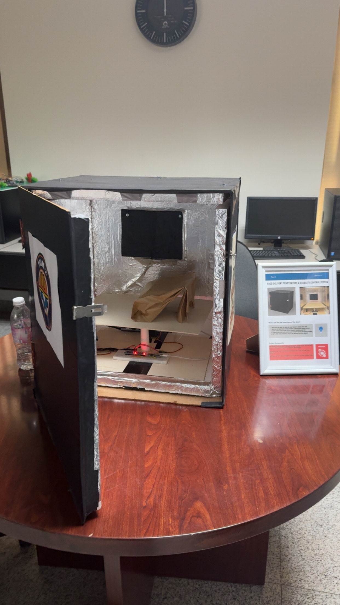

Vehicle Emergency Alert System
This project was developed for
the Design Engineering 1 course.
The project was a vehicle model
with an emergency alert system.
It used different sensors to detect fire,
rollover, and collision.
When an emergency was detected,
the system was designed to send
an alert to emergency services.
The project was selected to be presented
at the course exhibition.

Smart Delivery Box
This project was developed for
the Design Engineering 2 course.
I worked as the team leader
and helped organize the tasks
and follow the project development.
During the project, I searched online
for different solutions and ideas.
I also learned how to program
some parts of the system.
I tested the system several times
at home and continued improving it
until we reached a suitable result.